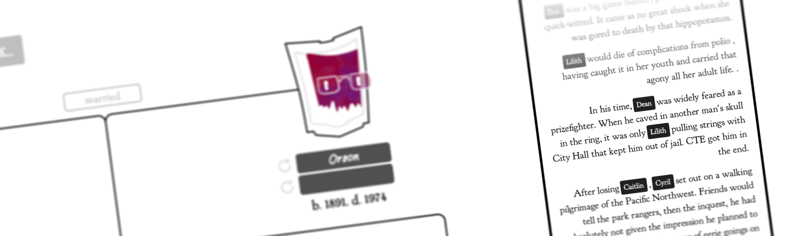
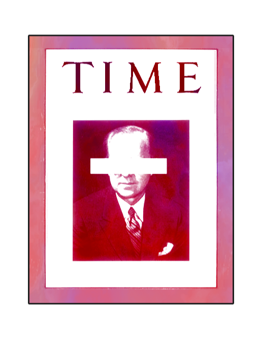
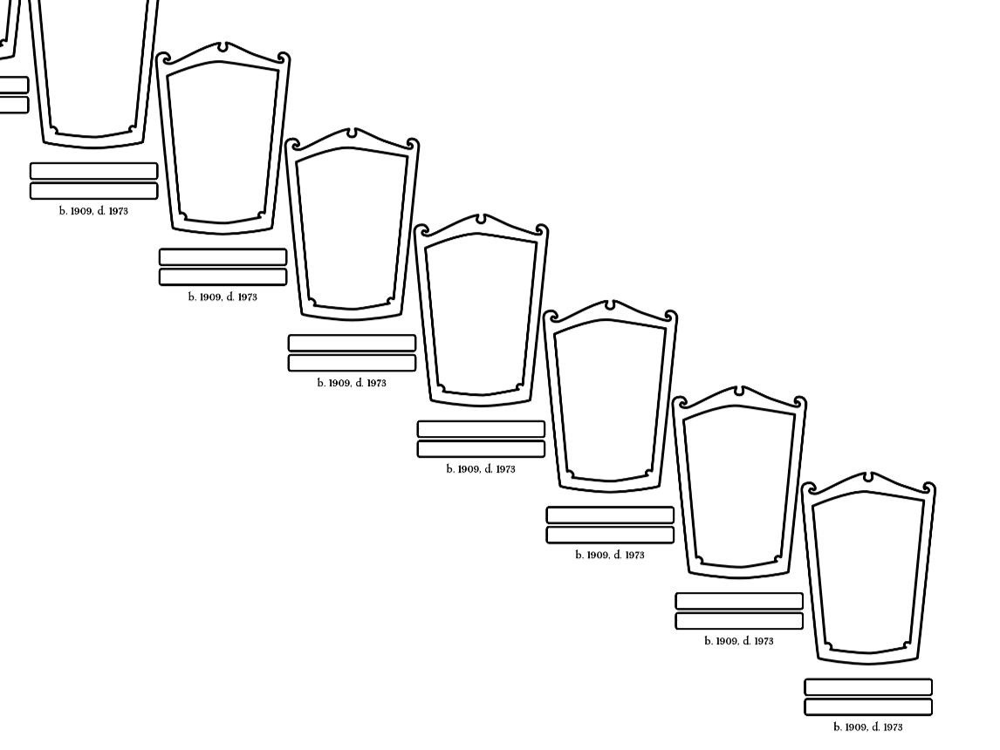
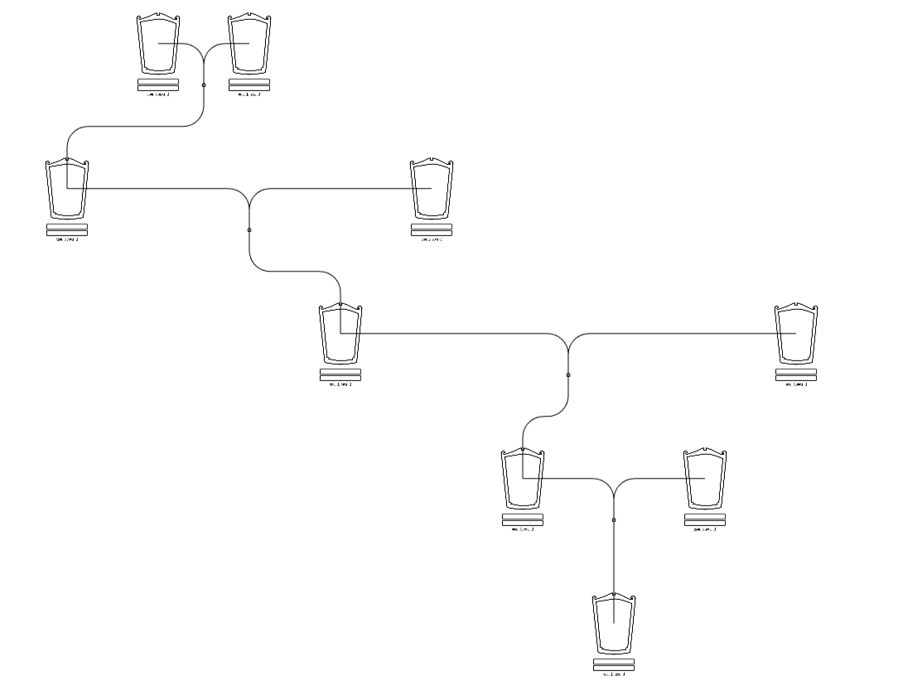
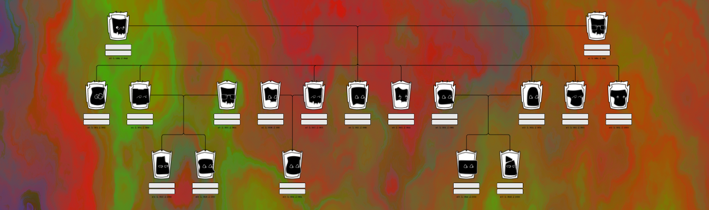
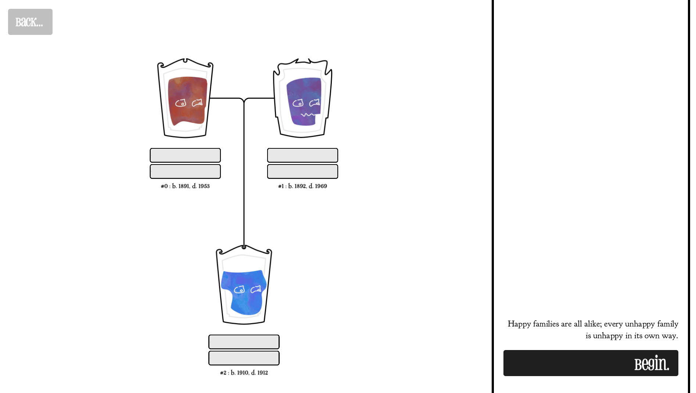
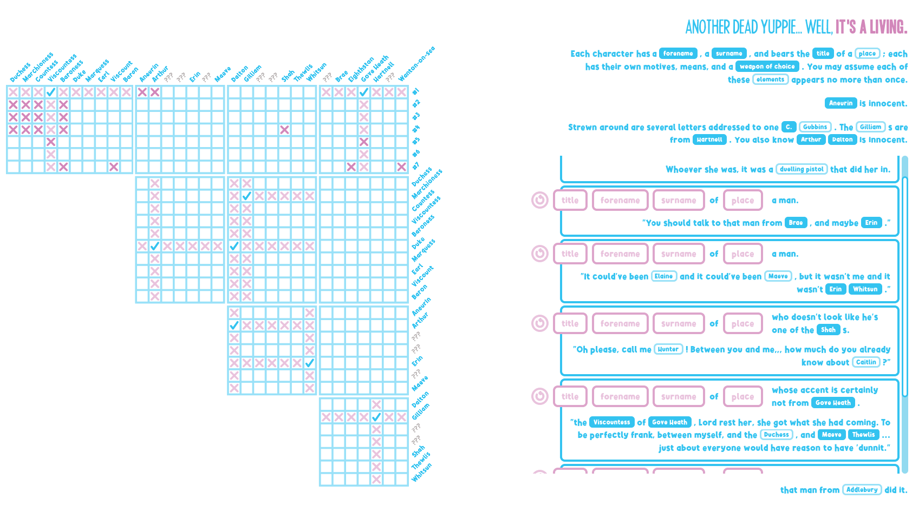
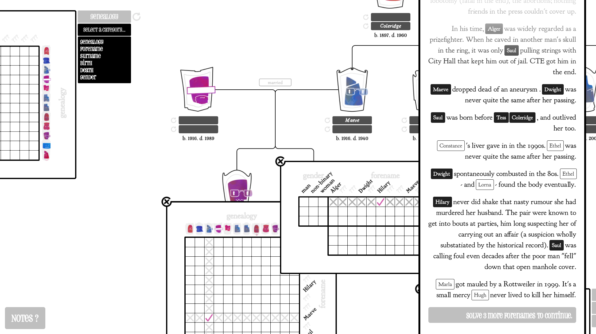
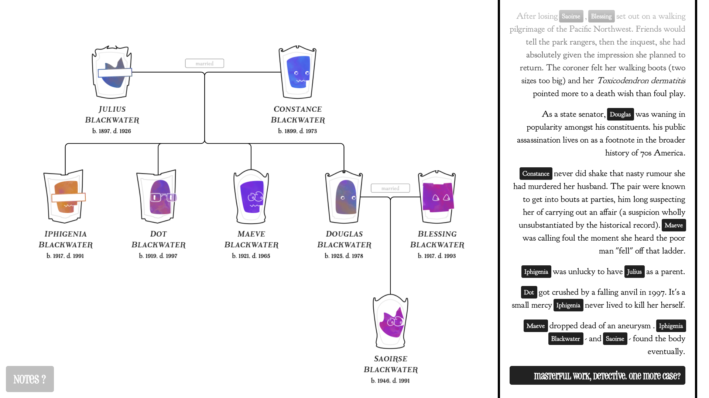

<style>
  @import url('https://fonts.cdnfonts.com/css/latin-modern-roman');
</style>

<article class="px-1">
  <div class="text-panel" style="color:white;">
    <h3 style="margin-top:0rem;color:white"><strong>I was gonna call it <i>Dead Kennedys</i> but that's probably bad SEO</strong></h3>
    <p><b>Key Achievements</b> Designed a generator to set (and solve) uniquely-determined logic puzzles, themed as murder mysteries. Optimised its constraint solver within an inch of its life, using SIMD and other low-level CPU tricks. Added grammars, plus a custom lightweight markup, to write the puzzles' procedural text.</p>
    <strong>Made With </strong></em>Godot, C++.
  </div>

  <div style="text-align:right;width:100%;display:block;margin-left:auto;margin-right:auto">
    
  </div>

  <h2>Narrative</h2>

  <div style="text-align:left;width:90%;display:block;margin-left:auto;margin-right:auto">
    
	<p style="font-size:80%;padding:0;color:#6d6c6c;"><b>Dead Kennedys</b> </p>
  </div>

  <div style="display:flex; justify-content:center;">

	<div class="columns is-centered is-multiline is-mobile" style="display:flex; justify-content:center; width:100%">

	  <div style="text-align:center;width:49%;display:block;margin-left:auto;margin-right:auto">
		
	  </div>

	  <div style="text-align:center;width:49%;display:block;margin-left:auto;margin-right:auto">
		
	  </div>

	</div>

  </div>

  <div style="text-align:center;width:100%;display:block;margin-left:auto;margin-right:auto">
    
  </div>

  <div style="text-align:center;width:90%;display:block;margin-left:auto;margin-right:auto">
    
	<p style="font-size:80%;padding:0;color:#6d6c6c;"><b>Hereditary</b> </p>
  </div>

  <h2>Grammar / Architecture</h2>

  <div style="text-align:center;width:90%;display:block;margin-left:auto;margin-right:auto">
	<p style="font-size:80%;padding:0;color:#6d6c6c;"><b>'Black box' diagram?</b> </p>
  </div>

  <h2>CPU Performance / CMake, linking to blog?</h2>

  <div style="text-align:center;width:90%;display:block;margin-left:auto;margin-right:auto">
	<p style="font-size:80%;padding:0;color:#6d6c6c;"><b>VerySleepy vs. Tracy</b> </p>
  </div>

  <h2>UI / Playtesting</h2>

  <div style="text-align:center;width:90%;display:block;margin-left:auto;margin-right:auto">
    
	<p style="font-size:80%;padding:0;color:#6d6c6c;"><b>Work-in-Progress</b> </p>
  </div>

  <div style="text-align:center;width:90%;display:block;margin-left:auto;margin-right:auto">
	
	<p style="font-size:80%;padding:0;color:#6d6c6c;"><b>A Note about Notes</b> </p>
  </div>

  <div style="text-align:center;width:90%;display:block;margin-left:auto;margin-right:auto">
	
  </div>

  <h2 style="text-align:right">The full demo is playable on <strong><a href="https://veronica-drysdale.itch.io/kennedyesque" target="_blank" rel="noreferrer noopener">Itch.io</a></strong>.</h2>
</article>
